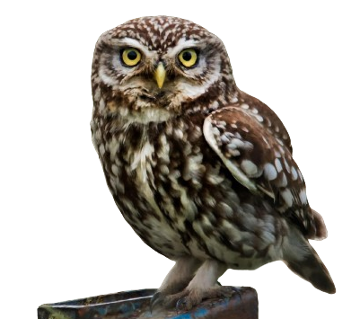
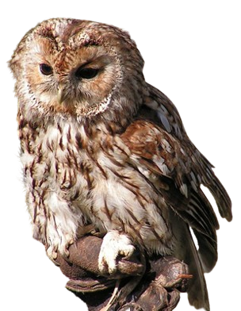
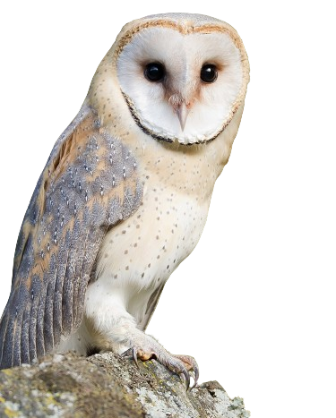
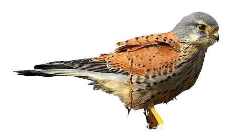
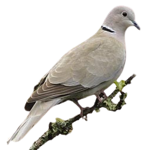

Bruant zizi

Le Bruant zizi mâle ressemble superficiellement au Bruant jaune. La confusion peut venir surtout des femelles et des jeunes. Il est un peu plus petit avec la queue plus courte.
La mâle nuptial se distingue aisément de dos à ses parties supérieures (manteau, couvertures et tertiaires) très châtain et à l'absence de roux vif au croupion qui est gris olive. De face, ce qui frappe est le dessin de la tête et la poitrine. Le premier est très contrasté avec une succession de bandes sombres (calotte grise striée de noir, lores noirs, couvertures auriculaires noirâtres et gorge noire) et de deux bandes jaunes intercalées encadrant le bandeau oculaire sombre. Une tache blanche est visible à l'arrière des parotiques. La poitrine présente un large plastron olive surmonté d'un collier jaune et souligné de deux larges plages châtain remontant vers les poignets. Le ventre est jaune et les flancs légèrement striés. Le bec est bicolore, noir dessus et gris bleuté dessous. Les deux paires externes de rectrices ont du blanc, bien visible seulement en vol ou pendant la toilette, sur leur vexille interne.
La femelle ressemble au mâle, mais en moins coloré. Elle se distingue assez facilement de la femelle du Bruant jaune à ses couvertures châtain, son croupion gris brun, les patrons de tête et de poitrine identiques à ceux du mâle mais moins marqués, moins colorés. Le plumage est plus strié et la gorge est blanche.

Buse variable

La Buse variable, comme son nom l'indique, a un plumage extrêmement variable. Cela peut aller d'un blanc presque pur à un brun sombre quasi uniforme, avec tous les intermédiaires possibles et imaginables. C'est très déroutant pour un ornithologue débutant. Mais heureusement, dans la majorité des cas, l'oiseau est d'un brun moyen avec des caractéristiques spécifiques que je vais décrire, mais il faut bien avoir en tête que les variantes sont nombreuses. Il est admis que les oiseaux du nord de l'aire sont plus pâles que ceux du sud.
La silhouette est massive, particulièrement chez la femelle, plus grande et plus robuste que le mâle. La pointe des ailes fermées atteint à peu près l'extrêmité de la queue. La tête est assez grosse, faisant paraître le cou engoncé dans les épaules.
Le plumage adulte se caractérise par une relative uniformité des parties supérieures.

Chevêche d'Athéna

La Chevêche d'Athéna est une petite chouette d'un peu plus de 20 cm de longueur pour une envergure de 45 à 50 cm et un poids d'environ 200 g. C'est un oiseau compact, à grosse tête, corps massif, ailes et queue courtes. Il n'y a pas de dimorphisme sexuel. La femelle est simplement un peu plus grande que le mâle.
Le plumage de l'adulte est brun tacheté de blanc dessus, blanc strié de brun dessous. La tête est plus large que haute, d'aspect un peu rectangulaire avec les angles arrondis. La calotte est brune, finement mouchetée de blanc. Les disques faciaux bruns et blancs mettent en valeur les yeux jaune-d'or surmontés de sourcils blancs formant de face comme un X coiffant le bec couleur paille qui émerge à la jonction des deux disques. Curieusement, la nuque montre un dessin brun et blanc qui évoque les disques faciaux si bien que, lorsque la chevêche tourne la tête à 180° ou nous tourne le dos, on peut avoir l'impression qu'elle nous regarde toujours. C'est une caractéristique fréquente dans la famille. Ce doit être une adaptation destinée à dissuader un prédateur éventuel d'attaquer lorsque la tête est tournée.
Les rémiges et les rectrices ont un aspect barré. Les tarses sont emplumés de blanc.

Chouette hulotte

La Chouette hulotte est une chouette de taille moyenne (envergure de 95 à 105 cm) inféodée aux milieux forestiers du paléarctique occidental. L'espèce présente deux morphes de plumage, un gris et un roux, comme beaucoup d'autres rapaces nocturnes.
L'adulte de morphe gris a un plumage brun-gris marqué de taches brun sombre et claires qui rompent la continuité et le rendent très cryptique. Une bande blanche ou crème est particulièrement visible au niveau des scapulaires externes. Le dessous est blanc à beige clair, strié et barré plus discrètement de brun. La grosse tête arrondie porte un masque facial pâle à contours arrondis bien développé. Il est coupé en son centre par une ligne sombre qui rejoint le bec. Il présente de légers cercles concentriques autour des gros yeux sombres. Le bec, surmonté par un X blanc est couleur paille.

Effraie des clochers (Chouette effraie)

L'Effraie des clochers est une chouette de taille moyenne tout à fait distinctive et facile à reconnaître. Son masque facial pâle en forme de cœur, entourant ses yeux sombres assez petits, est caractéristique. Lorsqu'elle est surprise de jour dans sa retraite, elle ferme les yeux et contracte son masque, ce qui lui donne une physionomie particulière.
Les parties supérieures sont grises et rousses, et finement tachetées de blanc et de noir. Les parties inférieures ont une teinte qui va du blanc pur à un roux assez prononcé, avec ou sans tacheture.
Les rémiges et les rectrices sont nettement barrées de noirâtre. Les longs tarses sont étroitement emplumés de blanc ou de roux. Le bec est pâle, couleur corne.
L'espèce compte 10 sous-espèces (anciennement 28 avant les "splits") mais les différences de plumage ne sont pas très importantes entre elles. La ssp "alba" d'Europe de l'Ouest est plus blanche dessous que "guttata" d'Europe centrale qui est nettement rousse avec des taches sombres.
Il n'y a pas de dimorphisme sexuel, mais le mâle est en moyenne plus pâle que la femelle, en particulier sur les côtés de la tête et du cou, et moins tacheté qu'elle.
Le poussin est couvert d'un duvet blanc fourni. Le juvénile est semblable à l'adulte, mais encore plus tacheté.

Élanion blanc

Petit rapace à grosse tête. Bien qu'il soit de taille inférieure, on le confond souvent avec les busards cendrés et Saint-Martin auxquels il s'apparente un peu à cause de colorations blanche, grise et noire. Toutefois, la silhouette est plus trapue et la queue plus arrondie.
L'Élanion blanc est gris et blanc avec les épaules noires et les yeux rouge foncé.
Les parties inférieures sont blanches.
La tête est blanche, avec un petit masque noir autour de l'oeil. Le bec est plutôt court. Le bec est noir avec la cire jaune. Les yeux sont rouge foncé. Les pattes courtes et nues et les doigts sont jaunes.
Les deux sexes sont semblables.

Faisan de Colchide

Le Faisan de Colchide présente un fort dimorphisme sexuel. Le mâle (ou coq), avec sa longue queue et son plumage haut en couleurs, est un oiseau qu'on remarque et qui est de ce fait bien connu du grand public. Cette espèce présente de nombreuses sous-espèces, avec des variantes de plumage caractéristiques de chacune, par exemple avec ou sans collier blanc.
Le corps est tout en nuances de couleurs chaudes allant du beige roussâtre au châtain foncé en passant par des teintes mordorées du plus bel effet. L'aspect d'ensemble sur le terrain est brun-roux. De nombreuses plumes de couverture sont ourlées ou terminées de clair sur le dessus, de brun sombre ou de noir sur les flancs et le dessous, ce qui rompt l'uniformité du plumage.
La tête est remarquable. Elle est de couleur bleue ou verte suivant la lumière, à reflets brillants, et soulignée souvent d'un collier blanc.
La femelle (ou poule) est plus petite, avec une queue relativement plus courte et un plumage cryptique, dans les tons beiges et marqué de sombre, qui la dissimulent parfaitement.

Faucon crécerelle

Le Faucon crécerelle est un faucon de petite taille au manteau roux des milieux ouverts de l'Ancien Monde. C'est un oiseau svelte au corps fin et à longues ailes étroites et longue queue. D'aspect, il est proche d'autres espèces du genre "Crécerelle" et des confusions sont possibles.
L'espèce est dimorphique. Le mâle adulte, plus petit que la femelle, se reconnaît à son plumage contrasté. La tête est gris cendré sur le dessus et les côtés. Sous l'œil sombre cerclé de jaune, un large trait noirâtre sépare les couvertures auriculaires grises de la gorge crème. La cire du bec est très jaune. Les parties supérieures, d'un roux-châtain assez vif, sont maculées de taches brun-noir. La queue gris clair est barrée de noir à son extrémité de façon très visible. Le gris remonte sur les sus-caudales et le croupion. Les longues rémiges apparaissent noires. Les parties inférieures, crème à la gorge et roussâtres plus bas, sont nettement striées ou maculées de brun noir, stries sur la poitrine, macules plus larges sur les flancs. Les pattes sont très jaunes avec des ongles noirs.
La femelle adulte est globalement plus uniforme. Elle est dépourvue de la couleur grise caractéristique du mâle. Seule la queue des femelles âgées peut grisonner.

Héron cendré

Le Héron cendré est un de nos plus grands Ardéidés, le plus grand d'Europe. On le reconnaît justement à sa grande taille, à sa teinte grise et, au vol, à sa silhouette particulière.
Le plumage est gris moyen sur les parties supérieures et blanc dessous. Les plumes de vol, rémiges et rectrices, sont noirâtres, d'où un contraste typique entre elles et le reste du corps qui se voit bien en vol.
Le plumage gagne en netteté chez l'adulte. Les bords de la calotte deviennent bien noirs et se prolongent en petite huppe. Le bec jaunit, le devant du cou égrène de nettes stries noires, une tache blanche apparaît au poignet au-dessus des petites couvertures noires, les scapulaires s'allongent, les pattes s'éclaircissent. C'est ce plumage qui prévaut une grande partie de l'année, mais dans le courant de l'hiver, le plumage nuptial va se développer chez l'adulte reproducteur.
Le bec devient jaune orange, les lores bleuissent, la huppe noire s'allonge, de longues plumes ornementales poussent au bas du cou et au niveau des scapulaires, les pattes jaunissent encore. Le mâle se distingue alors de la femelle par ses teintes plus vives. Tous ces atours contribueront à la mise en valeur de l'adulte au moment des parades nuptiales.
Le juvénile et l'immature ont un plumage qui ressemble à celui de l'adulte inter-nuptial, mais plus terne, avec la partie supérieure du bec et les pattes sombres.

Tourterelle turque

La Tourterelle turque est un petit pigeon élancé, vivant proche de l'Homme et de ses activités. Avec sa queue assez longue et ses ailes relativement courtes et arrondies, elle peut être prise au vol pour un épervier, ce qui peut mettre en émoi provisoire les petits passereaux lorsqu'elle déboule sans prévenir.
Elle a un plumage clair. Les parties supérieures (corps, couvertures alaires et rectrices centrales) sont d'un brun-chamois clair, paraissant uniforme de loin. Mais de près, on voit que certaines tectrices ont un rachis assombri et sont légèrement ourlées de pâle. Les rémiges sont brun sombre et des plumes gris clair sont visibles vers le poignet. Les parties inférieures sont sable clair. En période nuptiale, la tête, le cou et la corps se teintent légèrement de rose. Un net demi-collier noir se dessine à l'arrière du cou, parfois souligné de blanc. Les rectrices, centrales exceptées, sont bicolores, noires sur la moitié proximale, blanches sur la partie distale et cela se voit très bien en vol comme se voit très bien le dessous des ailes clair. L'iris est rouge-sang, l'œil cerclé de blanc et le bec noir. Les pattes sont rosâtres.
Le juvénile a les tectrices supérieures nettement ourlées de chamois. Le demi-collier est absent. L'iris est brun et les pattes brun rougeâtre.